| ROMI面板 |
| 返回<<< |
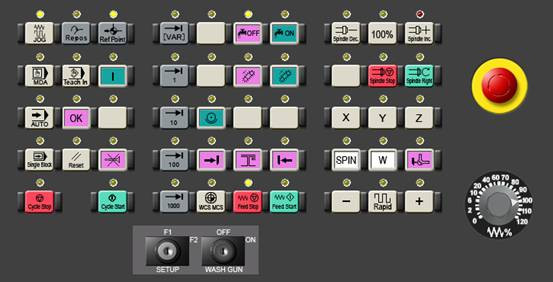 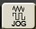 手动 重新定位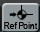 回参考点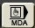 MDI 示教 厂家自定义功能AUTO 厂家自定义功能 单段 复位 循环启动 循环停止 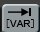 增量 冷却液开冷却液关1 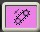 排屑反转排屑正转10 厂家自定义功能 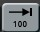 100 厂家自定义功能机床门 厂家自定义功能 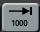 1000 WCS/MCS进给停止 进给启动 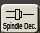 主轴- 100%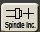 主轴+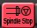 主轴停止 主轴启动X向 Y向 Z向 厂家自定义功能 厂家自定义功能 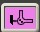 厂家自定义功能负方向 快速 正方向 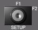 电源开关厂家自定义功能 急停 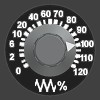 进给倍率选择开关
|